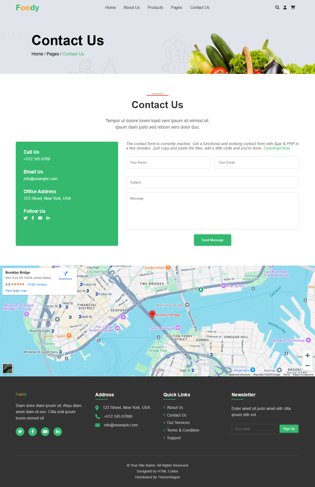
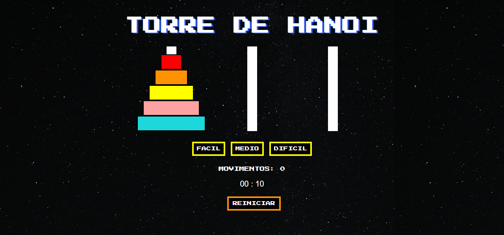

Our Services
Web Development
Sou um Desenvolvedor FullStack com experiência em criar soluções escaláveis, performáticas e inovadoras para web. Atuo desde o desenvolvimento do frontend até a lógica complexa do backend, garantindo interfaces fluidas e sistemas robustos. Tenho domínio em tecnologias como React.js, Angular e TailwindCSS no frontend, além de Node.js e Spring Boot no backend. Para bancos de dados, trabalho com PostgreSQL, MySQL e MongoDB. Também utilizo Git e GitHub para controle de versão e Vercel para deploy. Possuo experiência com APIs REST, WebSockets e integração de pagamentos. Além das habilidades técnicas, minha experiência com vendas e processos financeiros me permite desenvolver soluções que não apenas funcionam bem, mas também impulsionam negócios e otimizam operações. Se você busca um sistema eficiente, moderno e bem estruturado, estou pronto para desenvolver e entregar soluções de alto impacto.
Read moreBack-end Development
Sou um Desenvolvedor Backend especializado na criação de sistemas robustos, escaláveis e de alto desempenho. Minha experiência abrange desde a arquitetura de APIs até a otimização de bancos de dados e implementação de integrações seguras. Trabalho com Node.js, Java e Spring Boot, desenvolvendo aplicações performativas, seguras e preparadas para alto tráfego. Tenho expertise em PostgreSQL, MySQL e MongoDB**, garantindo armazenamento eficiente e consultas otimizadas. Além disso, implemento **APIs RESTful, WebSockets e integrações de pagamento, sempre seguindo as melhores práticas de segurança e autenticação. Utilizo Git e GitHub para versionamento de código, além de ferramentas de deploy como Vercel e ambientes cloud. Meu diferencial está na capacidade de estruturar sistemas pensando na escalabilidade, eficiência e segurança, sempre alinhado às necessidades do negócio. Se busca um backend sólido, confiável e pronto para crescer, posso entregar a solução ideal.
Read moreMobile Development
Sou um Desenvolvedor Mobile focado na criação de aplicativos eficientes, intuitivos e de alto desempenho. Trabalho no desenvolvimento de soluções que proporcionam experiência fluida, otimização de performance e integração robusta com APIs e serviços externos. Tenho experiência com React Native para desenvolvimento de aplicativos híbridos, garantindo alta performance e compatibilidade tanto para Android quanto para iOS. No backend, utilizo Node.js, Java e Spring Boot para criar APIs seguras e escaláveis, integrando bancos de dados como PostgreSQL, MySQL e MongoDB. Também aplico boas práticas de segurança, autenticação e notificações push, além de trabalhar com integração de pagamentos e serviços em nuvem. Utilizo Git e GitHub para versionamento e ferramentas de deploy para distribuir os aplicativos de forma otimizada. Se busca um app moderno, rápido e bem estruturado, estou pronto para desenvolver soluções que entregam uma experiência de alto nível aos usuários.
Read moreLatest Projects



Torre de Hanoi
Jogo da Torre de Hanoi feito com HTML, CSS e JavaScript. Jogo de lógica onde o objetivo é mover todos os discos de uma haste para outra, respeitando a regra de que um disco maior não pode ficar sobre um disco menor. Criado com o intuito de instigar o meu filho ao aprendizado de lógica de programação.
Contact Us
About Me
FullStack Developer
Desenvolvedor FullStack apaixonado por inovação tecnológica, com foco contínuo em soluções escaláveis e de alto desempenho. Comprometido com o aprendizado contínuo e aprimoramento de habilidades, trago uma abordagem proativa e orientada a resultados, com forte capacidade analítica e comunicação eficaz. Especialista em trabalho colaborativo, resolução de desafios complexos e melhoria da experiência do usuário final. Estou sempre em busca de oportunidades para contribuir com projetos de impacto, impulsionando o sucesso de equipes e organizações por meio de tecnologia de ponta.
Read More